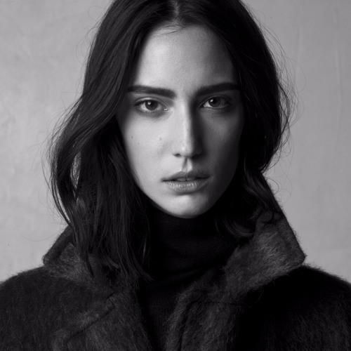
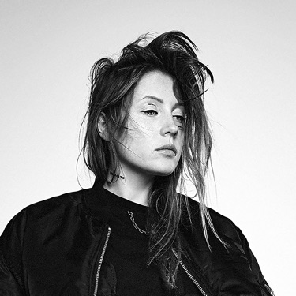

Amelie Lens
Amelie Lens est une DJ née à Vilvorde en Belgique le 31 mai 1990. Elle est aussi productrice de musique et copropriétaire du label Lenske et du label Exhale. Après son premier EP en 2016, elle attire l'attention de producteurs de renom.
MES 5 TRACKS PREFEREES
- Higher
- Drift
- L'obscurité
- Contradiction
- Little Robot
Charlotte de Witte
Charlotte de Witte est une disc-jockey belge et productrice de musique électronique. Elle est née à Gand le 21 juillet 1992. Elle débute en 2010 sous le pseudonyme de Raving George et se fait connaître, surtout localement.
MES 5 TRACKS PREFEREES
- Form
- Selected
- Liquid Slow
- RPM
- Doopler
Sama Abduladi

Sama' Abdulhadi, aussi connue sous les noms Sama' et Skywalker, est une musicienne, DJ et productrice de musique électronique palestinienne basée à Paris. Elle est considérée comme la DJ palestinienne la plus connue.
MES 5 TRACKS PREFEREES
- Fever
- Acid Bass
- Drum code
- Robot Ride
- Love and Hate